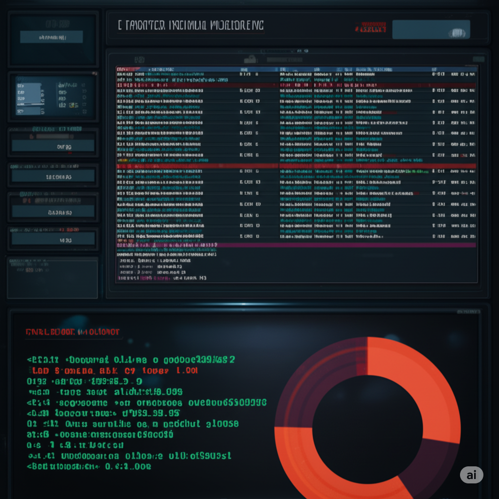

Senaryoya Hoş Geldiniz
Bu interaktif senaryoda, ÇOLHAK Corporation'ın siber güvenlik mühendisisiniz. Göreviniz, gelişen bir güvenlik tehdidini analiz etmek, kritik kararlar almak ve şirketi potansiyel bir felaketten korumaktır. Her adımda sunulan bilgileri dikkatle değerlendirin. Hazır mısınız?

Simülasyon Rolleri
- Sizin Rolünüz: Siber Güvenlik Mühendisi - ÇOLHAK Corporation'ın siber güvenlik ekibinin bir parçasısınız. Olay müdahalesinde aktif rol alacak, analizler yapacak ve kritik kararlar vereceksiniz.
- Ezgi (Tier-1 SOC Analisti) - Ekibinizin gözü kulağı; ilk uyarıları ve şüpheli aktiviteleri tespit eden kişidir.
- Alper (Tier-2 Analisti) - Ezgi'den gelen olayları daha derinlemesine analiz eden ve teknik araştırmalar yürüten uzmanınızdır.
- Ceyda (Siber Güvenlik Yöneticisi) - Siber güvenlik ekibinizin lideri olarak, kriz anında nihai kararları veren ve stratejik rehberlik sağlayan kişidir.
- Satış Direktörü - Şirketin ticari operasyonlarından sorumlu kritik bir paydaştır; özellikle canlı demo gibi iş süreçlerinin aksamasını kesinlikle istemez.
- Finans Direktörü (CFO) - Şirketin finansal sağlığından sorumlu üst düzey yöneticidir.
🕒 07:15 – İlk Sinyal: Zenginleştirilmiş SIEM Uyarısı
Günün başlangıcında, Tier-1 SOC Analisti Ezgi, SIEM (Güvenlik Bilgi ve Olay Yönetimi) panelinde kritik bir uyarı fark eder. Bir korelasyon kuralı tetiklenmiştir: "Kritik Varlık Ağından Bilinmeyen C2 Sunucusuna Periyodik Veri Sızıntısı".

ALERT ID: 8451
TRIGGER: Correlation Rule - "Suspicious C2 Beaconing"
SOURCE IP: 10.10.30.15 (VLAN: IoT Cihazları)
HOSTNAME: KAMERA-3KAT-OKYANUS
SOURCE MAC: 00:1A:2B:3C:4D:5E
DESTINATION IP: 88.54.12.219 (Reputation: Düşük, Kategori: Bilinmiyor)
PROTOCOL: UDP/443
OBSERVATION: Son 3 saattir her 5 dakikada bir 128KB'lık bir veri paketi gönderiliyor.
PCAP SUMMARY: 'update.serve-config.net' için yapılan DNS sorgusu 88.54.12.219'a çözümlendi. UDP payload'u gizlenmiş Base64 dizeleri içeriyor.
MITRE ATT&CK MAPPING: T1041 (Exfiltration Over C2), T1571 (Non-Standard Port)Ezgi: "Bu normal bir trafik değil. Kaynak IP, IoT VLAN'ında görünüyor ve hedef daha önce görmediğimiz şüpheli bir adres. MITRE eşleşmeleri de endişe verici. Durumu hemen Tier-2'ye (Alper) iletiyorum."
🕒 07:30 – Eş Zamanlı Gelişmeler ve İlk Karar Anı
Ezgi'nin analiziyle hemen hemen aynı anda, sisteme iki farklı olay kaydı düşer. Ekip olarak hangi olaya öncelik vereceğinize karar vermelisiniz.
Olay 1: Yardım Masası Talebi #7254
Kullanıcı: Ayşe Yılmaz
Konu: 3. Kat Okyanus Toplantı Odası'ndaki kamera sürekli donuyor ve web arayüzü çok yavaş. Dün sabah böyle bir sorun yoktu.
Olay 2: Kritik Sistem Uyarısı #9112 (Kırmızı Balık)
Sistem: Active Directory
Konu: Finans Direktörü (CFO) hesabında son 15 dakika içinde 50'den fazla başarısız oturum açma denemesi tespit edildi.
Ekip Lideri: "İki tane potansiyel olarak ciddi olayımız var. Biri potansiyel veri sızıntısı, diğeri üst düzey bir yöneticinin hesabına yönelik bir saldırı olabilir. Kaynaklarımız sınırlı, hangisine odaklanıyoruz?"
🕒 07:50 – Yanlış Önceliklendirme
Ekip, Finans Direktörünün hesabına odaklanmaya karar verir. Yapılan hızlı araştırma sonucunda, Finans Direktörünün yurt dışında tatilde olduğu ve yeni şifresini unuttuğu için mobil cihazından defalarca yanlış giriş yapmaya çalıştığı anlaşılır. Hesap geçici olarak kilitlenir ve durum kontrol altına alınır.
Alper: "Bu bir 'false positive' (yanlış alarm) idi. Ancak bu araştırmayı yaparken yaklaşık 20 dakika kaybettik. Şimdi acilen diğer olaya dönmemiz gerekiyor. Umarım geç kalmamışızdır."
🧑💻 08:00 – Alper’in Derinlemesine Analizi
Tier-2 Analisti Alper, SIEM uyarısı ile yardım masası talebini birleştirir. Şüpheli `10.10.30.15` IP adresini şirketin Varlık Yönetim Sistemi'nde sorgular. Sonuç nettir: IP adresi, 3. Kat Okyanus Toplantı Odası'ndaki bir "SmartEye 3000" model IP kamerasına aittir.
Hızlı bir internet araştırması, bu modelin firmware'inde yakın zamanda açıklanmış kritik bir güvenlik açığını (CVE-2025-1337) ortaya çıkarır. Bu zafiyet, yetkisiz Uzaktan Kod Çalıştırmaya (RCE) olanak tanımaktadır.
Alper: "Tamam, şimdi her şey oturdu. Kameradaki yavaşlama bir arıza değil, bir semptom. Cihaz, bilinen bir zafiyet üzerinden ele geçirilmiş ve bir botnet parçası olarak C2 sunucusuna veri gönderiyor. Bir sonraki adımı belirlemeliyiz."
🕵️♂️ 08:15 – Soruşturmayı Derinleştirme: Düşmanın Niyeti Ne?
Alper'in bulguları net: Cihaz ele geçirilmiş. Ancak düşmanın asıl amacı ne? Sadece bir DDoS botnet'i mi, yoksa daha büyük bir planın ilk adımı mı? Ceyda, bir sonraki adımı belirlemeniz için size dönüyor.
Ceyda: "Giriş noktasını bulduk, güzel iş. Şimdi neyin peşinde olduklarını anlamamız lazım. Üç seçeneğimiz var: Dışarıyı mı araştıralım, içeriye mi odaklanalım, yoksa yayılımı mı kontrol edelim?"
Seçenek A: C2 Sunucusunu Analiz Et
Hedef IP ve domain'i Tehdit İstihbaratı platformlarında (VirusTotal, Shodan vb.) araştır. Bu, saldırganın kimliği ve TTP'leri (Taktik, Teknik, Prosedürler) hakkında bilgi verebilir.
Seçenek B: Payload'ı Analiz Et
Cihaza indirilen 'payload.sh' betiğini ve 'c2.pl' Perl betiğini sandbox ortamında incele. Zararlının tam olarak ne yaptığını, hangi yeteneklere sahip olduğunu (örn: ağ tarama) öğren.
Seçenek C: İç Ağ Taraması Yap
Ağdaki diğer "SmartEye 3000" model kameraları bulmak için acil bir tarama başlat. Zafiyetin ne kadar yaygın olduğunu anla ve potansiyel diğer kurbanları belirle.
🕒 08:30 – Ani Komplikasyon: Yönetim Baskısı
Tam analiziniz sonuçlanırken, Satış Direktöründen o beklenen telefon gelir. Sesi oldukça gergindir.

Satış Direktörü: "Ekibiniz Okyanus Odası'ndaki kamerayla mı uğraşıyor? O kameranın 1 saat içinde çalışır durumda olması lazım, çok önemli bir yabancı müşteriye canlı demo sunumu yapacağız! Odayı kapatamazsınız, hemen bir çözüm bulun!"
Bu yeni bilgi, verilecek kararın sadece teknik değil, aynı zamanda operasyonel bir boyutu olduğunu da ortaya koyuyor. Ekip üzerindeki baskı artmıştır.
🏢 08:45 – Kriz Toplantısı ve Nihai Karar
Siber Güvenlik Yöneticisi Ceyda'ya son durumu özetlersiniz: "CVE-2025-1337 zafiyeti kullanılarak ele geçirilmiş bir IP kameramız var. Sadece dışarıyla haberleşmiyor, aynı zamanda elimizdeki ilk bilgilere göre hareket ediyor. Ağ içinde henüz bir yanal hareket tespit etmedik. Ancak Satış Departmanı'nın 1 saatten az bir süre içinde o kameraya ihtiyacı var."
Ceyda: "Anlaşıldı. Zamanımız kısıtlı ve baskı altındayız. Elimizde üç seçenek var gibi görünüyor. Karar sizin. Ne yapıyoruz?"
Ekip olarak kararınızı verin:
Seçenek A: İzole Et ve Yamala (Güvenli Yol)
Kamerayı derhal ağdan ayır. Cihazı laboratuvar ortamına al, imajını yakala ve en son firmware ile güncelle. Tehdit anında durdurulur.
Risk: Saldırganın nihai hedefi hakkında daha fazla bilgi edinemeyiz. Satış sunumu iptal olur.
Seçenek B: Honeypot'a Yönlendir (Riskli Gözlem)
Kameranın trafiğini, ana ağdan tamamen izole bir "Honeypot" (Bal Küpü) ortamına yönlendir. Saldırganın davranışlarını (TTP'ler) gizlice izleyerek değerli istihbarat topla.
Risk: Saldırgan Honeypot'u fark edebilir veya gözlem sırasında daha agresif bir saldırı (örn: fidye yazılımı) başlatabilir.
Seçenek C: Karantinaya Al ve Gözlemle (Hesaplı Orta Yol)
Kamerayı internet erişimi olmayan, izole bir VLAN'a taşı. Cihazın internete çıkışını engelle ama yerel ağdaki 'yem' varlıklara ne yapmaya çalıştığını gözlemle. Bu, yanal hareket denemelerini açığa çıkarabilir.
Risk: Yapılandırma hatası saldırganın karantinadan kaçmasına neden olabilir. Satış sunumu yine de gecikebilir.
📞 09:00 – İletişim Krizi: Paydaş Yönetimi
Teknik müdahale kararınız uygulamaya konulurken, Ceyda yanınıza gelir. Yüzü endişelidir. "Teknik taraf kontrol altında gibi, ama telefonlarım susmuyor. Satış Direktörü demonun akıbetini soruyor, CFO ise olası finansal etki raporu istiyor. Şirket içinde durumu nasıl yöneteceğiz? Resmi pozisyonumuz ne olmalı?"
Ceyda: "Teknik müdahale kadar önemli bir andayız. Vereceğin tavsiye, şirketin bu krizi içerde nasıl algılayacağını belirleyecek. Ne söylüyoruz?"
Seçenek A: Teknik Odaklanma
'Benim önceliğim bu tehdidi durdurmak, iletişim sizin işiniz.' diyerek sadece teknik operasyona odaklan. Yönetimin kendi arasında durumu çözmesini sağla.
Seçenek B: Tam Şeffaflık
Satış Direktörüne demonun kritik bir siber güvenlik olayı nedeniyle kesin olarak iptal edildiğini bildir. CFO'ya durumu tüm çıplaklığıyla anlat ve olası en kötü senaryo için hazırlıklı olmalarını sağla.
Seçenek C: Kontrollü Bilgi Akışı
Satış'a 'geçici bir ağ sorunu' olduğunu söyle ve durumu kurtarmaya çalıştığınızı belirt. CFO'ya ise durumu 'kontrol altında bir olay' olarak raporla, panik yaratmaktan kaçın.
Kriz Sonrası Değerlendirme Raporu
Simülasyon tamamlandı. Kriz yönetimi performansınızın detaylı dökümü aşağıdadır.